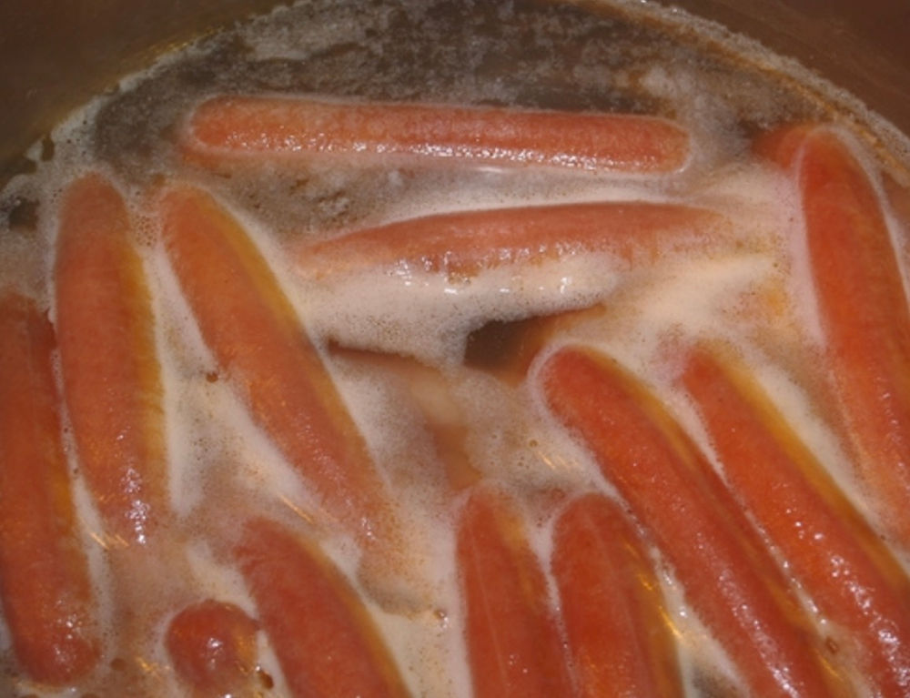

Hut Dawg Wata Soup

No, this isn't Hot Dog Water, it's Hut Dawg Wata, a typical asian dish cooked
in the mounts of Ratangharan, a small but quaint little village in the outskirts
of Yokohama. Perfect for the winter holidays, or if you can't afford hot dog buns.
Ingredients
Cooking Steps
- Boil tap water.
- Check if the water is hot (you can easily check by inserting your whole hand).
- Put in the sausages. No, no! All but THAT one.
- Leave them for like 8 or 10 minutes, idk honestly.
- Once they're done, grab the sausages and throw them in the trash.
- Serve the Hut Dawg Wata in mason jars, preferably.
- Enjoy!